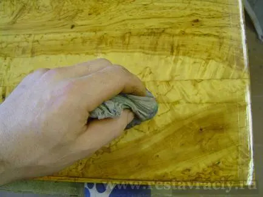

Материалы
Масло и мебель
Какую мебель можно покрывать маслом, а какую нежелательно?

О чём рассказывает мастерская
- Масло для реставрации
- Купить масло для дерева
- Пропитать дерево маслом
- Пропитка дерева маслом
- Каким маслом пропитать дерево
- Высыхающие масла
- Полувысыхающие масла
- Отделка маслом
В материале мастерской
Фотографии и детали
Открыть снимок у мастерской 


Открыть снимок у мастерской
Посмотреть снимки с сайта мастерской 5
Оригинальные фотографии откроются здесь с сайта мастерской.
 Открыть снимок у мастерской
Открыть снимок у мастерской  Открыть снимок у мастерской
Открыть снимок у мастерской  Открыть снимок у мастерской
Открыть снимок у мастерской  Открыть снимок у мастерской
Открыть снимок у мастерской  Открыть снимок у мастерской
Открыть снимок у мастерской Есть похожая вещь?
Подберите ракурсы для предварительной оценки.